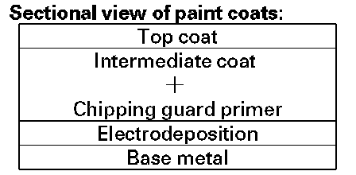
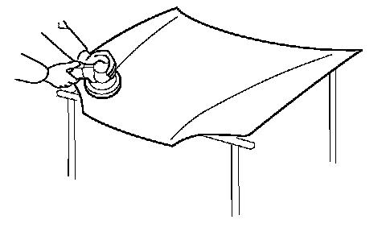
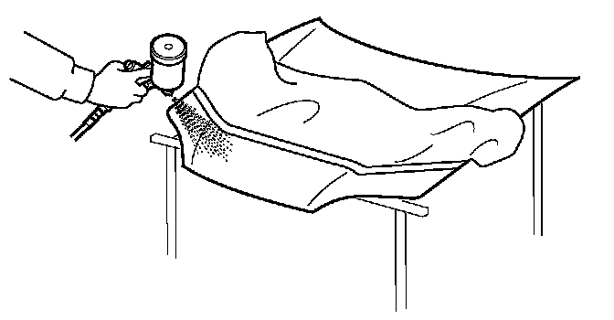

Soft Chipping Guard Primer Coat
General Safety PrecautionsThe removal of paint and undercoating by stone chips immediately exposes metal to the atmosphere, causing it to oxidize. The thickness of this oxidation increases if the process continues unchecked. The soft chipping guard primer protects against damage due to the impact of such objects.
- The soft chipping guard primer coat is applied over the E. D. (Electrostatically Deposited) primer. It is followed by guide coating and top coating.
- The soft chipping guard primer produces a smooth surface when dry. It should be sprayed so the thickness of the protective film is 20 microns.

- A soft chipping guard primer coat is then applied to the most susceptible area.
- Spray the primer surface (2-part urethane primer surfacer) on the soft chipping guard primer coating areas when you replace parts using soft chipping guard primer coat.
Coating Procedures
WARNING:
- Wear goggles or safety glasses to prevent eye injury.
- Ventilate when spraying undercoat.
1. Sanding the replacement part.
Use a double action sander and P400 disc sandpaper.
NOTE:
- Do not oversand the edges or corners of the part.
- Do not expose base metal.

2. Air blowing/degreasing.
Use alcohol, and wax and grease remover.
3. Protect from overspray.
Use masking tape and paper to protect the related areas from overspray.
4. Spraying primer surfacer.
- Spray about 4 to 5 coats to get 20 microns of thickness. One coat deposits about 5 to 7 microns.
- Do not try to cover the surface with one heavy coat. Applying several thin coats is recommended.
- Use a 2-part urethane primer surfacer and a spray gun.
- Mix the primer surfacer with the correct ratio of additive and solvent.
- Follow the primer surfacer manufacturer's instructions.

5. Drying.
After spraying primer surfacer, allow 7 to 10 minutes of drying time, then force dry it with infrared lamps or an industrial dryer.
6. Polishing.
- Check that the primer surfacer has dried thoroughly, then sand the primer surfacer.
- Use a double action sander and P400 P600 disc sandpaper.
7. Intermediate coating and top coating.